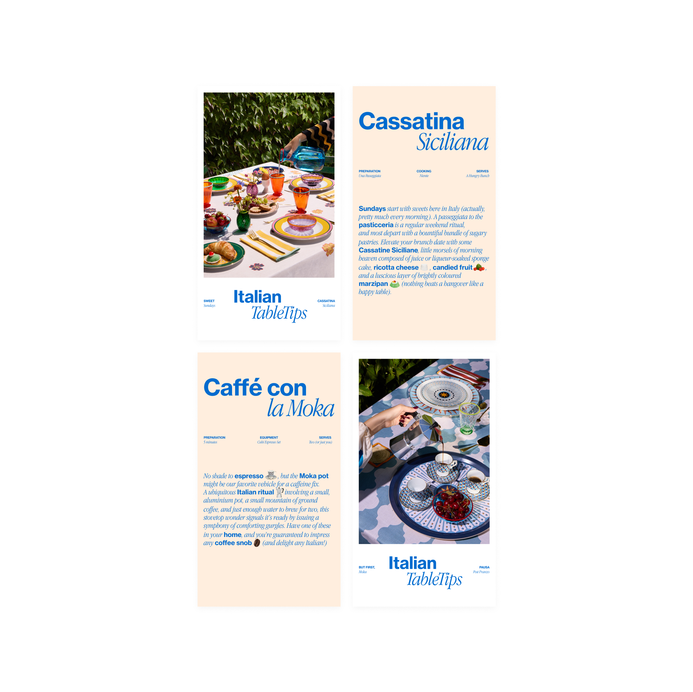
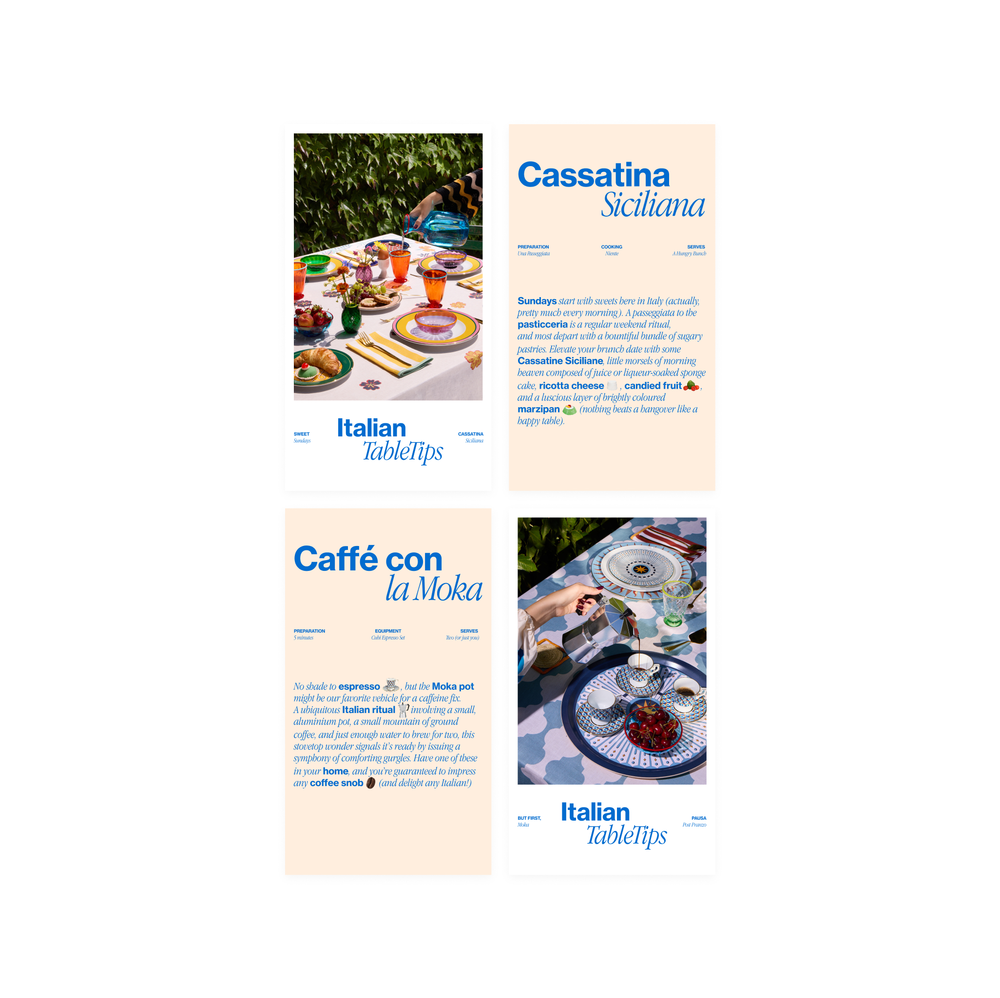

The Level Group | La DoubleJ
Digital Designer & Web Specialist
Digital Designer & Web Specialist
2022 – Present
Responsible for digital communications, including newsletters and website component redesigns. Manage design and development of static pages for special projects, handle ticket workflows, and contribute to social media through templates, story assets, and visual feed planning.
 
